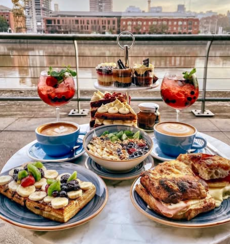
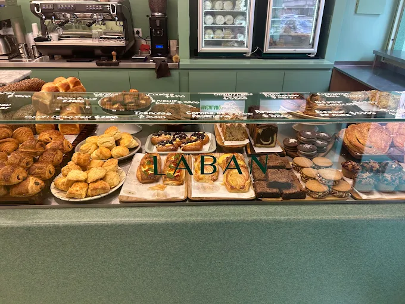
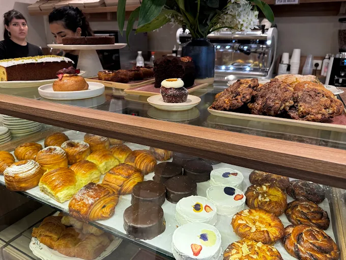
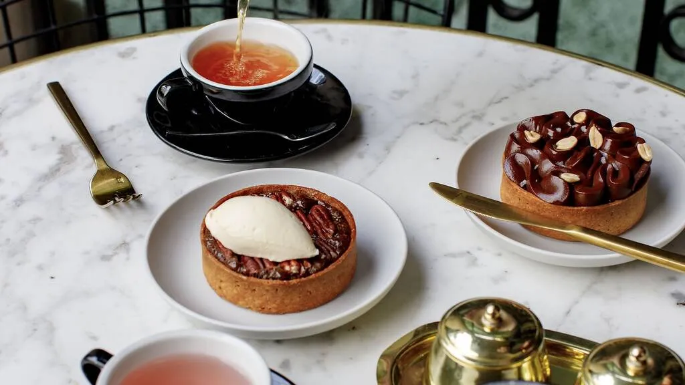
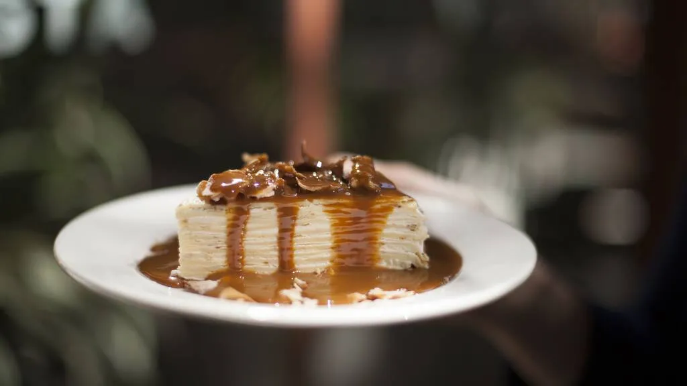

Meriendas BA ☕️
Los mejores cafés para tu merienda en Buenos Aires
Merendar es un pequeño placer que muchos olvidamos con el tiempo. Desde la infancia hasta la adultez, la merienda cambia pero nunca pierde su encanto. Tomarse un momento para disfrutar un buen café y una torta es un acto de pausa y disfrute en la rutina diaria.
Aquí te presentamos 10 de los mejores cafés de Buenos Aires para que tu próxima merienda sea deliciosa y sin apuros.
Malcriada
Dr. Emilio Ravignani 1338, CABA
Ciro
Pierina Dealessi 1350, Puerto Madero
Labán
Charcas 3656, Palermo
Crecia bollería
Juncal 2179, CABA
Casa Cavia
Cavia 2985, CABA
Casa Sáenz
Repúb Árabe 3001, CABA; Echeverría 2102, CABA.